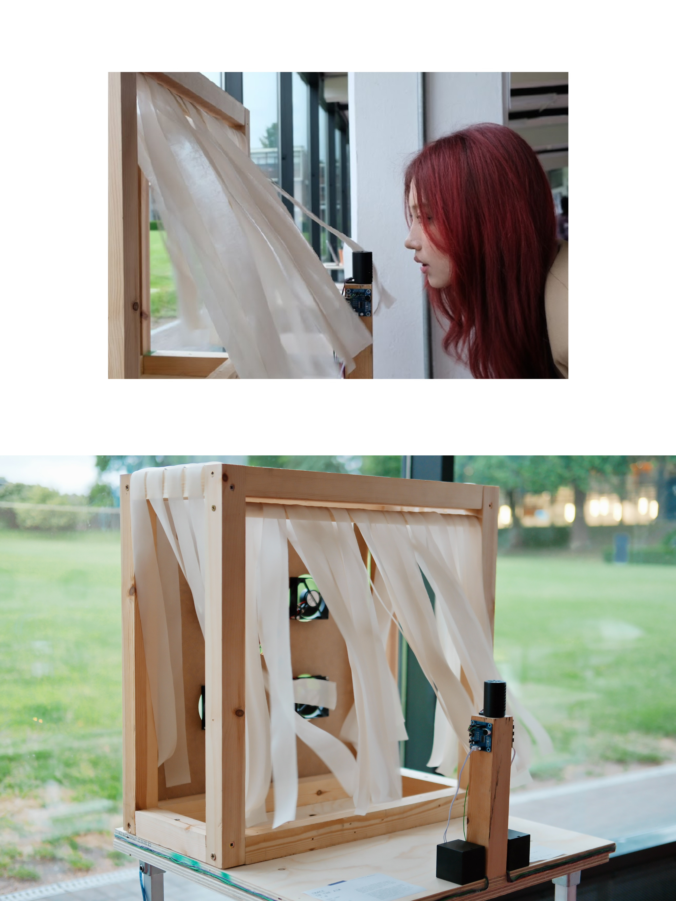
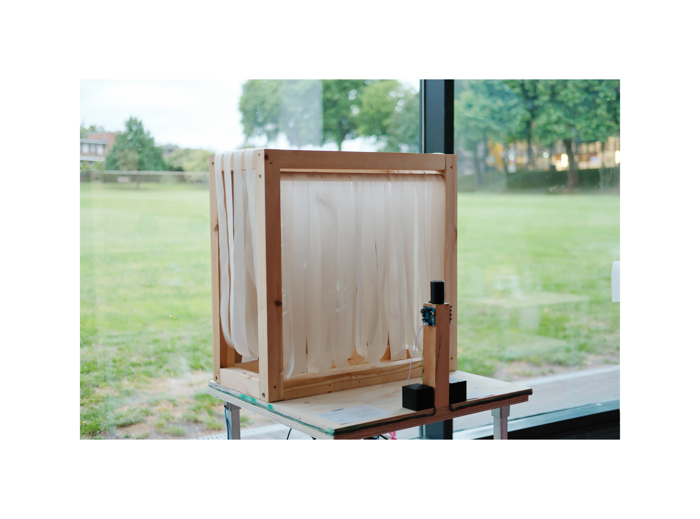
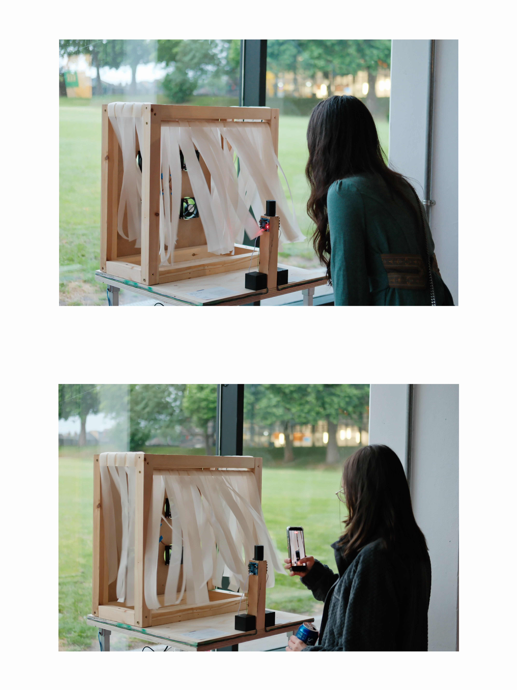
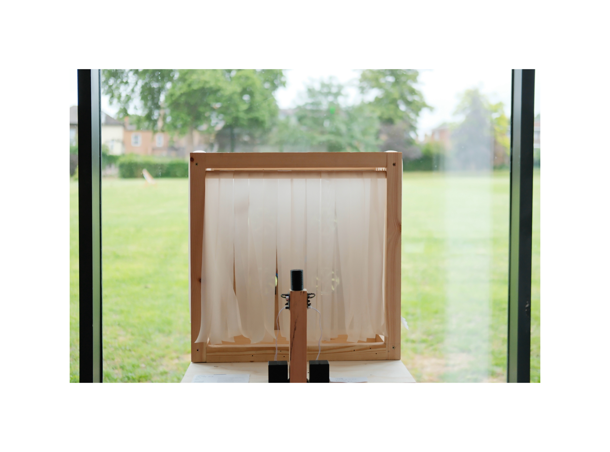

Trace in the Air
Trace in the Air is an interactive installation that explores how voice remains in space as a trace after it has disappeared. Inspired by Derrida’s ideas of trace and absence, the work uses delay, reverberation, airflow, and the movement of hanging fabric strips to create a dialogue across time. When one visitor speaks, they are answered not by their own live voice, but by the words left behind by the previous visitor, and the fabric is also moved by that earlier voice. Rather than emphasising the clarity of language, the work invites the audience to sense the residue and return of voice as it passes through space.
Zoey Zhou
Zoey Zhou is an interdisciplinary artist whose practice combines interactive installation, computational art, and spatial storytelling. Her work explores how voice, memory, and bodily presence can be translated into material and perceptual experience through real time systems, airflow, sound, and audience participation. In Trace in the Air, she creates a dialogue across time: one participant encounters the delayed residue of another through recorded voice, reverberation, and the movement of hanging fabric. Influenced by Derrida’s ideas of trace and absence, Zhou’s practice reflects on how something can disappear, yet still remain active through what it leaves behind.